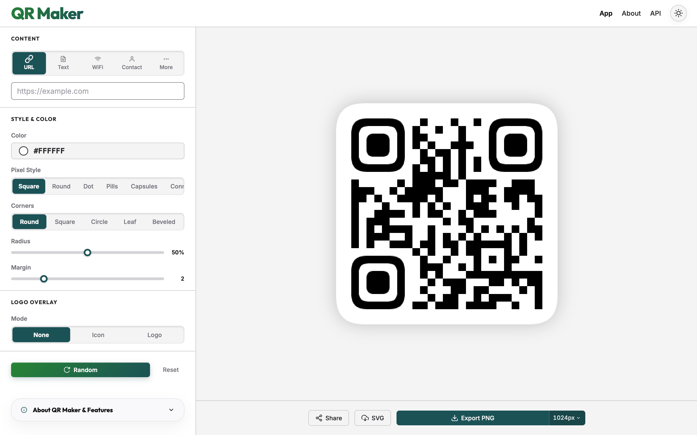
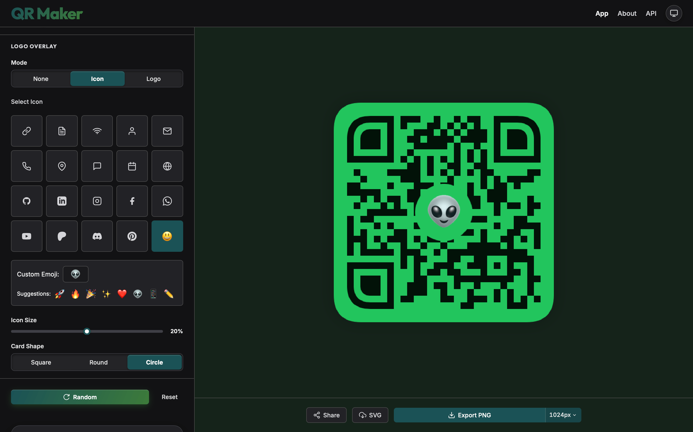
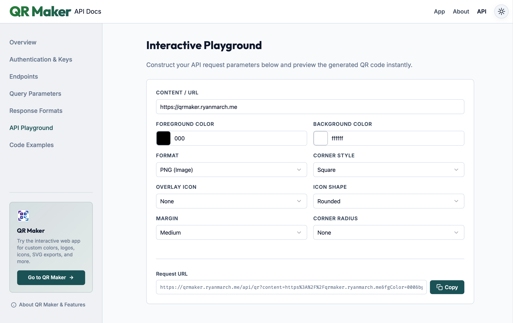

Meet QR Maker
Generate beautiful, customized QR codes instantly in the browser or with our developer API.
Interface Showcase
Get a glimpse of the application's visual controls.

Interactive Web App
Full-featured design canvas with live preview, pixel shape customizations, color selection, and multi-format downloads.

Branded Logos, Icons & Emojis
Upload a custom brand logo, select from standard system icons, or input any custom emoji to place in the center of your QR code.

Lightning-Fast API
Generate QR codes programmatically with a flexible API, custom playground, and simple authentication.
Features
Custom Visual Design
Go beyond boring black and white blocks. Personalize your QR codes by modifying pixel patterns (round, square, or dots), choosing distinct corner shapes, and setting custom colors.
Built for Privacy
Your QR code data stays in your browser. All designs are generated locally on your device, meaning your URLs, text inputs, and passwords are never sent to a server.
Vector & Raster Formats
Export your finished QR codes in crisp SVG format for print and scalable design systems, or save them as high-quality PNG images for digital displays and social sharing.
Developer Integration
Integrate QR generation directly into your workflows. Use our public endpoints to generate codes on the fly with query params, or register for an API key for higher rate limits. Explore the API Docs.
Instant Sharing
Share your designs instantly. Generate unique, shareable links that automatically load your customized styling parameters and settings when opened.
Installable Web App
Install QR Maker directly to your computer or mobile home screen. Design, configure, and download custom QR codes completely offline.
Common Use Cases
Create codes optimized for the physical world and digital experiences.
Restaurant Menus
Provide contact-free menus. Design high-contrast codes that print perfectly on table tents and window decals.
WiFi Network Access
Let guests connect instantly. Generate a code containing network credentials so they can scan and connect without typing passwords.
Event Registrations
Streamline entry gates. Link directly to tickets, RSVP forms, or calendar events for quick check-ins.
Digital Business Cards
Share details instantly. Embed vCard data or link directly to professional profiles or personal landing pages.
Frequently Asked Questions
Is QR Maker free?
Yes. QR Maker is completely free to use. Both the design dashboard app and the Developer API are open and free. Standard rate limits apply to public API requests, but you can generate a free API Key on our documentation page to unlock higher usage limits.
What formats can I export?
You can export designs in high-quality PNG (raster) or SVG (scalable vector). SVG is perfect for professional print materials and design software like Figma or Adobe Illustrator.
How does the Developer API work?
Our developer API lets you generate custom codes on the fly using standard HTTP GET requests. For increased limits, you can request a free API Key directly from our docs page.